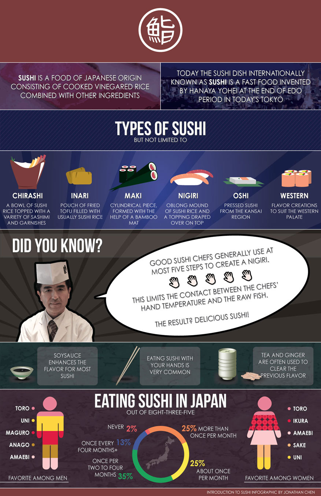

Infographic about Sushi
Sushi is a delicious Japanese dish, therefore I've created this infographic to spread the love. This was actually a school project that I had to do. I had to make an infographic using Photoshop and Illustrator with techniques such as Illustrator's 3D and built-in shapes, and other various elements using Photoshop and Illustrator.
Back to Showcase

Back to Showcase